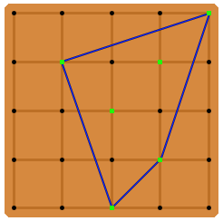

Project Euler 514
Project Euler 514
题目
Geoboard Shapes
A geoboard (of order \(N\)) is a square board with equally-spaced pins protruding from the surface, representing an integer point lattice for coordinates \(0 \le x,y \le N\).
John begins with a pinless geoboard. Each position on the board is a hole that can be filled with a pin. John decides to generate a random integer between \(1\) and \(N+1\) (inclusive) for each hole in the geoboard. If the random integer is equal to \(1\) for a given hole, then a pin is placed in that hole.
After John is finished generating numbers for all \((N+1)^2\) holes and placing any/all corresponding pins, he wraps a tight rubberband around the entire group of pins protruding from the board. Let \(S\) represent the shape that is formed. \(S\) can also be defined as the smallest convex shape that contains all the pins.

The above image depicts a sample layout for \(N = 4\). The green markers indicate positions where pins have been placed, and the blue lines collectively represent the rubberband. For this particular arrangement, \(S\) has an area of \(6\). If there are fewer than three pins on the board (or if all pins are collinear), \(S\) can be assumed to have zero area.
Let \(E(N)\) be the expected area of \(S\) given a geoboard of order \(N\). For example, \(E(1) = 0.18750, E(2) = 0.94335,\) and \(E(10) = 55.03013\) when rounded to five decimal places each.
Calculate \(E(100)\) rounded to five decimal places.
解决方案
令\(N=100\)。在 \([0,N]\times[0,N]\) 的整点格上，我们假设每个点独立以概率\(p=\dfrac1{N+1}\)被选为 pin，不选概率\(q=1-p=\dfrac{N}{N+1}.\)
令 \(a_{x,y}\)（假设 \(1\le y\le x\)）为如下随机模型下的期望面积。只看 \((x+1)\times(y+1)\) 的格点矩形 \([0,x]\times[0,y]\)；并且以下条件是前提： 1. \((0,y)\) 与 \((x,0)\) 一定有点； 2. \(x\)-轴上 \((0,0),(1,0),\dots,(x-1,0)\) 都没有点； 3. \(y\)-轴上 \((0,0),(0,1),\dots,(0,y-1)\) 都没有点。
在这些条件下，凸包左下边界是一条从 \((0,y)\) 到 \((x,0)\) 的离散凸折线，\(a_{x,y}\) 是这条折线下方面积的期望。它显然对称：\(a_{x,y}=a_{y,x}.\)
对一条可行曲线，取最小 \(h\) 使得直线 \(x+y=h\) 与曲线相切；交段最左点为 \((x_1,y_1)\)，最右点为 \((x_2,y_2)\)。几何上可把原面积拆为三部分：
- 中间直角三角形面积 \(\dfrac12 h^2\)；
- 左侧剪切变换得到一个新的 可行曲线，期望 \(a_{x_1,y-h}\)；
- 右侧剪切变换得到一个新的 可行曲线，期望 \(a_{x-h,y_2}\)。
于是固定 \((h,x_1,x_2)\) 时条件期望是\(\dfrac12h^2+a_{x_1,y-h}+a_{x-h,y_2}.\)
我们对每个可能的 \(h\) 分层求期望。
当 \(1\le h<y\) 时，必须先满足两件事：严格位于该层下方的点全为空，其概率为 \(q^{\binom{h-1}{2}}\)；其二，该层内部点中至少有一个被选中，其概率为 \(1-q^{h-1}\)。在此条件下，面积分解为三部分：中间三角形面积 \(\dfrac12 h^2\)，加上左块与右块。设左端第一次接触位置参数为 \(x_1\in\{1,\dots,h-1\}\)，右端接触位置参数为 \(y_2\in\{1,\dots,h-1\}\)，则它们分别带来\(\displaystyle\sum_{x_1=1}^{h-1}p,q^{x_1-1}a_{x_1,y-h},\sum_{y_2=1}^{h-1}p,q^{y_2-1}a_{x-h,y_2}.\)的贡献。因此，层 \(h<y\) 的总贡献为
\[ q^{\binom{h-1}{2}} \left[ (1-q^{h-1})\frac12h^2 +\sum_{x_1=1}^{h-1}pq^{x_1-1}a_{x_1,y-h} +\sum_{y_2=1}^{h-1}pq^{y_2-1}a_{x-h,y_2} \right]. \]
当 \(h=y\) 时，事件“该层有点”已由端点 \((0,y)\) 的强制存在自动满足，所以只有线下全空因子 \(q^{\binom{y-1}{2}}\)。此时面积仍分成中间三角形 \(\frac12y^2\) 与右侧块：若该层其余内部点全空，权重为 \(q^{y-1}\)，对应项为 \(a_{x-y,y}\)；若右端落在内部位置 \(y_2\in\{1,\dots,y-1\}\)，对应\(\displaystyle\sum_{y_2=1}^{y-1}p,q^{y_2-1}a_{x-y,y_2}.\)故 \(h=y\) 的贡献为
\[ q^{\binom{y-1}{2}} \left( \frac12y^2 +q^{y-1}a_{x-y,y} +\sum_{y_2=1}^{y-1}pq^{y_2-1}a_{x-y,y_2} \right). \]
把 \(h=y\) 与 \(1\le h<y\) 两部分相加，得到递推：
\[ a_{x,y} =q^{\binom{y-1}{2}} \left( \frac12y^2 +q^{y-1}a_{x-y,y} +\sum_{y_2=1}^{y-1}p,q^{y_2-1}a_{x-y,y_2} \right)\ +\sum_{h=1}^{y-1}q^{\binom{h-1}{2}} \left[ (1-q^{h-1})\frac12h^2 +\sum_{x_1=1}^{h-1}p,q^{x_1-1}a_{x_1,y-h} +\sum_{y_2=1}^{h-1}p,q^{y_2-1}a_{x-h,y_2} \right]. \]
再定义\(\displaystyle b_{u,v}=\sum_{z=1}^{v-1}q^{z-1}a_{u,z},\)并用对称性 \(a_{r,s}=a_{s,r}\)，有\(\displaystyle\sum_{y_2=1}^{y-1}pq^{y_2-1}a_{x-y,y_2}=pb_{x-y,y},\sum_{x_1=1}^{h-1}pq^{x_1-1}a_{x_1,y-h}=pb_{y-h,h},\sum_{y_2=1}^{h-1}pq^{y_2-1}a_{x-h,y_2}=pb_{x-h,h}.\)
代回即可得到压缩形式 \[ a_{x,y} = q^{\binom{y-1}{2}} \left(\frac12y^2+pb_{x-y,y}+q^{y-1}a_{x-y,y}\right) +\sum_{h=1}^{y-1}q^{\binom{h-1}{2}} \left[(1-q^{h-1})\frac12h^2+p(b_{y-h,h}+b_{x-h,h})\right]. \]
接下来尝试降低计算\(a\)的时间复杂度到\(O(N^2)\)。
定义\(\displaystyle t_y=q^{\binom{y-1}{2}}\frac12y^2+\sum_{h=1}^{y-1}\frac12h^2(1-q^{h-1})q^{\binom{h-1}{2}},\)可推得\(\displaystyle t_y=t_{y-1}+\Bigl(y-\frac12\Bigr)q^{\binom{y-1}{2}},\)所以 \(t\) 可 \(O(N)\) 预处理。
再定义\(\displaystyle d_{x,y}=\sum_{h=1}^{y}q^{\binom{h-1}{2}}b_{x-h,h}.\)
对 \(1<y<x\)，有：
\[ \begin{cases} b_{x,y}=b_{x,y-1}+q^{y-2}a_{x,y-1},\\ d_{x,y}=d_{x,y-1}+q^{\binom{y-1}{2}}b_{x-y,y},\\ a_{x,y}=t_y+q^{\binom{y}{2}}a_{x-y,y}+p(d_{y,y-1}+d_{x,y}). \end{cases} \]
并由对称可得 \(a_{y,x}=a_{x,y}\)。边界：\(a_{1,1}=\dfrac12, a_{x,1}=a_{1,x}=\dfrac x2.\)
令外接矩形宽 \(x\)、高 \(y\)，并平移到 \([0,x]\times[0,y]\)。
设左下角被切掉的平均面积为 \(c_{x,y}\)，则四个角同分布，条件面积为\(F(x,y)=xy-4c_{x,y}.\)
定义\(\displaystyle Q(u)=q^{u-1}(1-q^{u+1}),S(x,y)=1-q^{x+1}-q^{y+1}+q^{x+y+1},P=q^{x-1}q^{y-1},s_{x,y}=\sum_{u=1}^{x-1}q^{u-1}b_{u,y},\)则
\[ c_{x,y}=\frac{p^2q}{R(x,y)} (Pa_{x,y}+Q(x)b_{x,y}+Q(y)b_{y,x}+S(x,y)s_{x,y}), \]
其中 \(R(x,y)\) 是凸包确实触到四边界的概率。接下来计算\(R(x,y)\)的值，一共有5种情况：
- \(x_1=0,y_1=0\)。即原点被选中。此时左边与下边已触到；再要求触到上边和右边，概率是 \(S(x,y)\)。故\(P_A=pS(x,y).\)
- \(1\le x_1\le x-1,1\le y_1\le y-1\)。对应固定 \((x_1,y_1)\) 的概率是\(p^2qS(x,y)q^{x_1-1}q^{y_1-1}.\)求和得\(\displaystyle P_B=p^2qS(x,y)\left(\sum_{x_1=1}^{x-1}q^{x_1-1}\right)\left(\sum_{y_1=1}^{y-1}q^{y_1-1}\right)=qS(x,y)(1-q^{x-1})(1-q^{y-1}).\)
- \(y_1=y,1\le x_1\le x-1\)。固定 \(x_1\) 的概率\(p^2qQ(y)q^{x_1-1}.\)求和得到\(\displaystyle P_C=p^2qQ(y)\sum_{x_1=1}^{x-1}q^{x_1-1}=pqQ(y)(1-q^{x-1}).\)
- \(x_1=x,1\le y_1\le y-1\)。同理\(P_D=pqQ(x)(1-q^{y-1}).\)
- \(x_1=x,y_1=y\)。此时概率同理为\(P_E=p^2qq^{x-1}q^{y-1}.\)
五类互斥且完备，所以
\[ R(x,y)=P_A+P_B+P_C+P_D+P_E=S(x,y)(1-q^x-q^y+q^{x+y-1})+pq\left[Q(y)(1-q^{x-1})+Q(x)(1-q^{y-1})\right]+p^2q^{x+y-1}. \]
固定宽高 \((x,y)\) 的外接矩形在大棋盘里有\((N+1-x)(N+1-y)\)种平移位置；其外部点全为空的概率为\(q^{(N+1)^2-(x+1)(y+1)}.\)故
\[ E(N)= \sum_{x=1}^{N}\sum_{y=1}^{N} q^{(N+1)^2-(x+1)(y+1)} (N+1-x)(N+1-y) \left[R(x,y)xy -4p^2q\big( q^{x-1}q^{y-1}a_{x,y} +Q(x)b_{x,y} +Q(y)b_{y,x} +S(x,y)s_{x,y} \big) \right]. \]
利用 \(x\leftrightarrow y\) 对称，计算时只做 \(y<x\) 再乘 \(2\)，加上对角 \(x=y\)即可。
代码
1 | N = 100 |